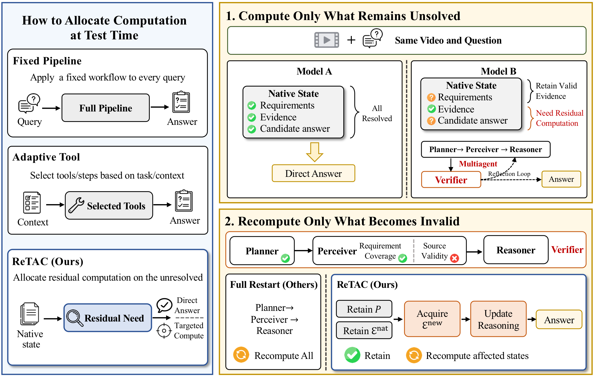
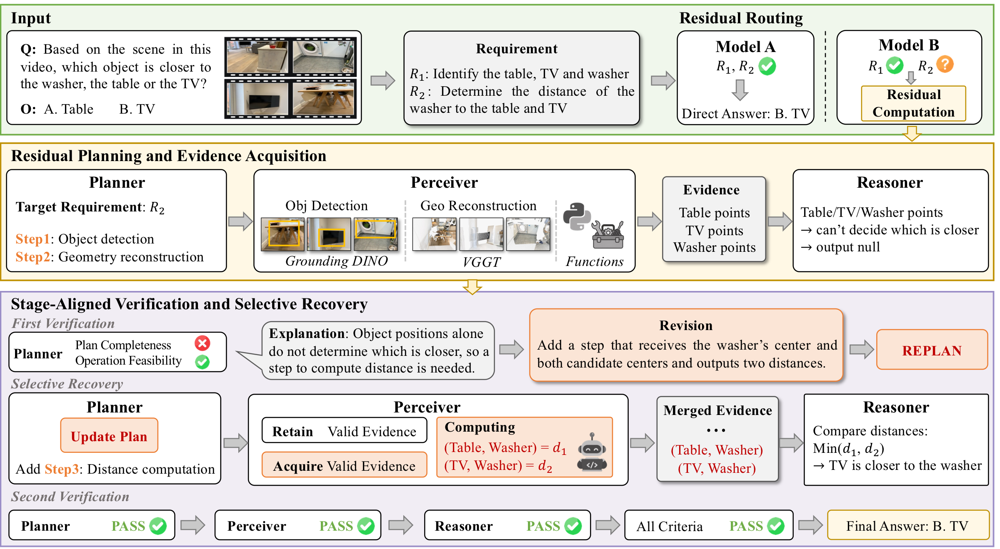
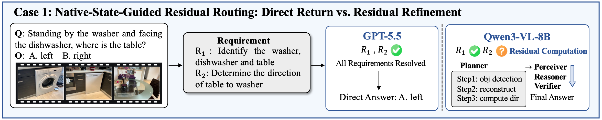
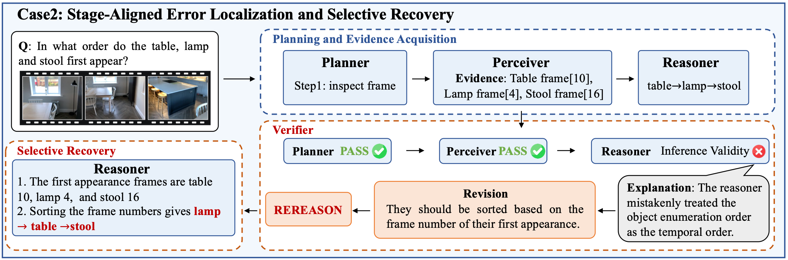

VSI-Bench-Debiased
| Base model | Direct | CoT | S&T | Think3D | ReTAC |
|---|---|---|---|---|---|
| Qwen3-VL-8B | 47.73 | 48.59 | 48.27 | 48.99 | 53.49 +5.76 |
| Gemini 3.1 Pro | 48.77 | 50.24 | 51.89 | 51.28 | 53.80 +5.03 |
| GPT-5.5 | 61.01 | 61.40 | 59.98 | 61.26 | 62.38 +1.37 |
Residual test-time agentic computation: Compute only what remains unresolved, and recompute only what becomes invalid.
Run the same full workflow for every query, even when the base model already has sufficient evidence.
Select tools from task context, but do not distinguish requirements already supported by the current model from those that remain unresolved.
Computes only for unresolved requirements, then localizes a failure to planning, perception, or reasoning and recomputes only the affected dependency states.


Across three base MLLMs and two video spatial reasoning benchmarks, ReTAC achieves the best overall score in every setting.
| Base model | Direct | CoT | S&T | Think3D | ReTAC |
|---|---|---|---|---|---|
| Qwen3-VL-8B | 47.73 | 48.59 | 48.27 | 48.99 | 53.49 +5.76 |
| Gemini 3.1 Pro | 48.77 | 50.24 | 51.89 | 51.28 | 53.80 +5.03 |
| GPT-5.5 | 61.01 | 61.40 | 59.98 | 61.26 | 62.38 +1.37 |
| Base model | Direct | CoT | S&T | Think3D | ReTAC |
|---|---|---|---|---|---|
| Qwen3-VL-8B | 39.87 | 41.23 | 40.28 | 40.87 | 44.50 +4.63 |
| Gemini 3.1 Pro | 49.47 | 50.00 | 49.37 | 50.08 | 51.33 +1.86 |
| GPT-5.5 | 49.61 | 50.24 | 50.08 | 50.76 | 52.14 +2.53 |
Overall score (%). VSI-Bench-Debiased uses the mean of eight task scores; STI-Bench reports sample-weighted accuracy. S&T denotes See&Trek. Green values are ReTAC; the accompanying number is its gain over Direct QA, in percentage points. Task-wise scores are reported in Table 1 (VSI-Bench-Debiased) and Table 2 (STI-Bench) of the paper.

